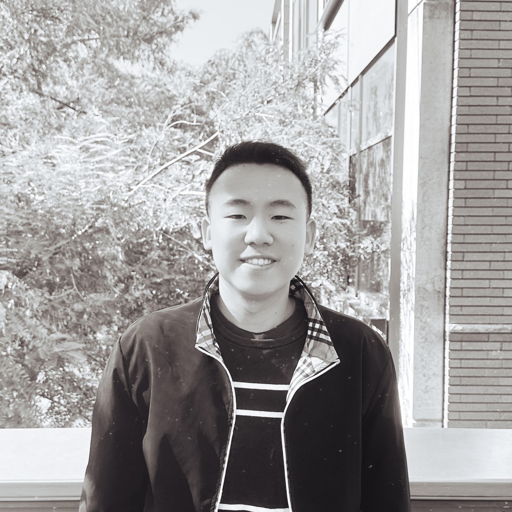
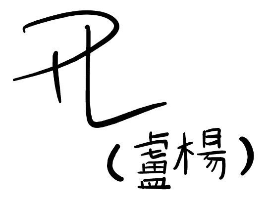

about me —


Hi! My name is Peter and I currently study at the University of California, Riverside majoring in Data Science & Business.
Growing up in SoCal, I had a passion for science and technology wanting to transform ideas into solutions that changed people's lives. In high school, I enjoyed biology and computer science and wanted to pursue a career where I could leverage both. I ended up studying data science because it allowed me to explore many different fields of science including biology and CS, and find my joy in blending creativity, innovation, and problem-solving.
My interest in design came from my belief that creating human connection through impactful changes aims to better an aspect of someone's life whether it's minimal or big. Creating a product that would bring joy to people while proving its feasibility, adaptability, and accessibility was my goal. This was where I decided to pursue business and learn how to build a product that would reach the right audience.
When I'm not coding or designing, I am listening to k-pop, reading books, skateboarding to find boba shops and local cafes, and trying my best to navigate life.
You can catch me studying at the library, marketing for Bearhack, designing websites for campus organizations through Design At UCR, and in search of the next best boba place!
Growing up in SoCal, I had a passion for science and technology wanting to transform ideas into solutions that changed people's lives. In high school, I enjoyed biology and computer science and wanted to pursue a career where I could leverage both. I ended up studying data science because it allowed me to explore many different fields of science including biology and CS, and find my joy in blending creativity, innovation, and problem-solving.
My interest in design came from my belief that creating human connection through impactful changes aims to better an aspect of someone's life whether it's minimal or big. Creating a product that would bring joy to people while proving its feasibility, adaptability, and accessibility was my goal. This was where I decided to pursue business and learn how to build a product that would reach the right audience.
When I'm not coding or designing, I am listening to k-pop, reading books, skateboarding to find boba shops and local cafes, and trying my best to navigate life.
You can catch me studying at the library, marketing for Bearhack, designing websites for campus organizations through Design At UCR, and in search of the next best boba place!
more about content